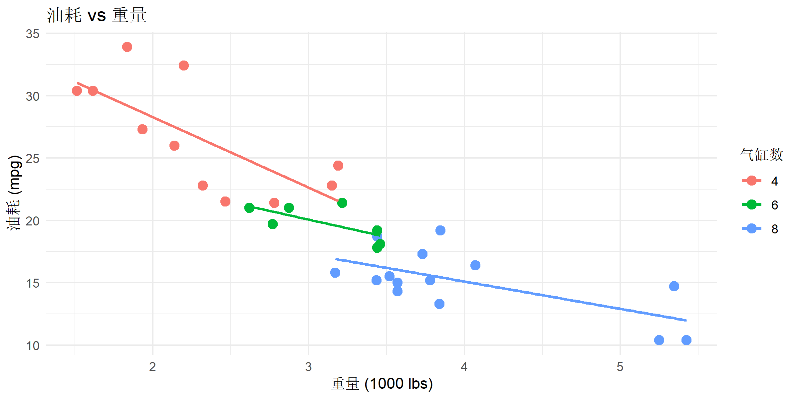

# 安装tidyverse套件
install.packages("tidyverse")
# 或单独安装核心包
install.packages(c("dplyr", "tidyr", "readr", "ggplot2"))tidyverse vs pandas: R与Python数据处理对比
实用操作
数据导入导出
tidyverse
系统对比tidyverse和pandas的数据处理语法,帮助你在两种语言间无缝切换
框架简介
tidyverse 和 pandas 分别是 R 和 Python 中最流行的数据处理框架,掌握两者的对应关系能帮助你在不同语言间快速切换。
核心对比
| 维度 | tidyverse (R) | pandas (Python) |
|---|---|---|
| 核心包 | dplyr, tidyr, readr, ggplot2 | pandas, matplotlib, seaborn |
| 数据结构 | tibble (data.frame) | DataFrame |
| 索引方式 | 基于列名 | 基于位置/标签 |
| 链式语法 | %>% (magrittr) 或 |> (native) |
. 方法链 |
| 缺失值 | NA |
NaN, None |
| 生态系统 | 统计、建模、可视化 | 机器学习、科学计算 |
| 性能 | 中等 (dplyr) / 快 (data.table) | 快 (NumPy后端) |
为什么需要对比学习?
- 跨语言协作: 团队可能混用R和Python
- 工具选择: 根据任务特点选择最合适的工具
- 知识迁移: 一种语言的经验能快速迁移到另一种
安装与加载
R (tidyverse)
library(tidyverse)
# 示例数据
data(mtcars)
df_r <- as_tibble(mtcars, rownames = "car")
head(df_r, 3)# A tibble: 3 × 12
car mpg cyl disp hp drat wt qsec vs am gear carb
<chr> <dbl> <dbl> <dbl> <dbl> <dbl> <dbl> <dbl> <dbl> <dbl> <dbl> <dbl>
1 Mazda RX4 21 6 160 110 3.9 2.62 16.5 0 1 4 4
2 Mazda RX4 W… 21 6 160 110 3.9 2.88 17.0 0 1 4 4
3 Datsun 710 22.8 4 108 93 3.85 2.32 18.6 1 1 4 1Python (pandas)
# 安装pandas
pip install pandas matplotlib seaborn
# 或使用conda
conda install pandas matplotlib seabornimport pandas as pd
import numpy as np
# 示例数据
import seaborn as sns
df_py = sns.load_dataset('mpg')
df_py.head(3)数据读取与写入
读取CSV文件
tidyverse (R)
# 使用readr包
df <- read_csv("data.csv")
# 常用参数
df <- read_csv(
"data.csv",
col_types = cols( # 指定列类型
id = col_integer(),
name = col_character(),
date = col_date()
),
na = c("", "NA", "NULL"), # 缺失值标识
skip = 1 # 跳过行数
)pandas (Python)
# 使用pandas
df = pd.read_csv('data.csv')
# 常用参数
df = pd.read_csv(
'data.csv',
dtype={ # 指定列类型
'id': int,
'name': str,
'date': str
},
na_values=['', 'NA', 'NULL'], # 缺失值标识
skiprows=1, # 跳过行数
parse_dates=['date'] # 解析日期列
)写入CSV文件
tidyverse (R)
# 写入CSV
write_csv(df, "output.csv")
# 保留行名
write_csv(df, "output.csv", row.names = TRUE)pandas (Python)
# 写入CSV
df.to_csv('output.csv', index=False)
# 保留索引
df.to_csv('output.csv', index=True)读取Excel文件
tidyverse (R)
library(readxl)
# 读取Excel
df <- read_excel("data.xlsx", sheet = "Sheet1")pandas (Python)
# 读取Excel
df = pd.read_excel('data.xlsx', sheet_name='Sheet1')数据筛选
筛选行 (filter / query)
tidyverse (R)
# 单条件筛选
df_r %>% filter(mpg > 25)# A tibble: 6 × 12
car mpg cyl disp hp drat wt qsec vs am gear carb
<chr> <dbl> <dbl> <dbl> <dbl> <dbl> <dbl> <dbl> <dbl> <dbl> <dbl> <dbl>
1 Fiat 128 32.4 4 78.7 66 4.08 2.2 19.5 1 1 4 1
2 Honda Civic 30.4 4 75.7 52 4.93 1.62 18.5 1 1 4 2
3 Toyota Coro… 33.9 4 71.1 65 4.22 1.84 19.9 1 1 4 1
4 Fiat X1-9 27.3 4 79 66 4.08 1.94 18.9 1 1 4 1
5 Porsche 914… 26 4 120. 91 4.43 2.14 16.7 0 1 5 2
6 Lotus Europa 30.4 4 95.1 113 3.77 1.51 16.9 1 1 5 2# 多条件筛选 (AND)
df_r %>% filter(mpg > 20, cyl == 4)# A tibble: 11 × 12
car mpg cyl disp hp drat wt qsec vs am gear carb
<chr> <dbl> <dbl> <dbl> <dbl> <dbl> <dbl> <dbl> <dbl> <dbl> <dbl> <dbl>
1 Datsun 710 22.8 4 108 93 3.85 2.32 18.6 1 1 4 1
2 Merc 240D 24.4 4 147. 62 3.69 3.19 20 1 0 4 2
3 Merc 230 22.8 4 141. 95 3.92 3.15 22.9 1 0 4 2
4 Fiat 128 32.4 4 78.7 66 4.08 2.2 19.5 1 1 4 1
5 Honda Civic 30.4 4 75.7 52 4.93 1.62 18.5 1 1 4 2
6 Toyota Cor… 33.9 4 71.1 65 4.22 1.84 19.9 1 1 4 1
7 Toyota Cor… 21.5 4 120. 97 3.7 2.46 20.0 1 0 3 1
8 Fiat X1-9 27.3 4 79 66 4.08 1.94 18.9 1 1 4 1
9 Porsche 91… 26 4 120. 91 4.43 2.14 16.7 0 1 5 2
10 Lotus Euro… 30.4 4 95.1 113 3.77 1.51 16.9 1 1 5 2
11 Volvo 142E 21.4 4 121 109 4.11 2.78 18.6 1 1 4 2# 多条件筛选 (OR)
df_r %>% filter(mpg > 30 | hp > 200)# A tibble: 11 × 12
car mpg cyl disp hp drat wt qsec vs am gear carb
<chr> <dbl> <dbl> <dbl> <dbl> <dbl> <dbl> <dbl> <dbl> <dbl> <dbl> <dbl>
1 Duster 360 14.3 8 360 245 3.21 3.57 15.8 0 0 3 4
2 Cadillac F… 10.4 8 472 205 2.93 5.25 18.0 0 0 3 4
3 Lincoln Co… 10.4 8 460 215 3 5.42 17.8 0 0 3 4
4 Chrysler I… 14.7 8 440 230 3.23 5.34 17.4 0 0 3 4
5 Fiat 128 32.4 4 78.7 66 4.08 2.2 19.5 1 1 4 1
6 Honda Civic 30.4 4 75.7 52 4.93 1.62 18.5 1 1 4 2
7 Toyota Cor… 33.9 4 71.1 65 4.22 1.84 19.9 1 1 4 1
8 Camaro Z28 13.3 8 350 245 3.73 3.84 15.4 0 0 3 4
9 Lotus Euro… 30.4 4 95.1 113 3.77 1.51 16.9 1 1 5 2
10 Ford Pante… 15.8 8 351 264 4.22 3.17 14.5 0 1 5 4
11 Maserati B… 15 8 301 335 3.54 3.57 14.6 0 1 5 8# 使用 %in%
df_r %>% filter(cyl %in% c(4, 6))# A tibble: 18 × 12
car mpg cyl disp hp drat wt qsec vs am gear carb
<chr> <dbl> <dbl> <dbl> <dbl> <dbl> <dbl> <dbl> <dbl> <dbl> <dbl> <dbl>
1 Mazda RX4 21 6 160 110 3.9 2.62 16.5 0 1 4 4
2 Mazda RX4 … 21 6 160 110 3.9 2.88 17.0 0 1 4 4
3 Datsun 710 22.8 4 108 93 3.85 2.32 18.6 1 1 4 1
4 Hornet 4 D… 21.4 6 258 110 3.08 3.22 19.4 1 0 3 1
5 Valiant 18.1 6 225 105 2.76 3.46 20.2 1 0 3 1
6 Merc 240D 24.4 4 147. 62 3.69 3.19 20 1 0 4 2
7 Merc 230 22.8 4 141. 95 3.92 3.15 22.9 1 0 4 2
8 Merc 280 19.2 6 168. 123 3.92 3.44 18.3 1 0 4 4
9 Merc 280C 17.8 6 168. 123 3.92 3.44 18.9 1 0 4 4
10 Fiat 128 32.4 4 78.7 66 4.08 2.2 19.5 1 1 4 1
11 Honda Civic 30.4 4 75.7 52 4.93 1.62 18.5 1 1 4 2
12 Toyota Cor… 33.9 4 71.1 65 4.22 1.84 19.9 1 1 4 1
13 Toyota Cor… 21.5 4 120. 97 3.7 2.46 20.0 1 0 3 1
14 Fiat X1-9 27.3 4 79 66 4.08 1.94 18.9 1 1 4 1
15 Porsche 91… 26 4 120. 91 4.43 2.14 16.7 0 1 5 2
16 Lotus Euro… 30.4 4 95.1 113 3.77 1.51 16.9 1 1 5 2
17 Ferrari Di… 19.7 6 145 175 3.62 2.77 15.5 0 1 5 6
18 Volvo 142E 21.4 4 121 109 4.11 2.78 18.6 1 1 4 2pandas (Python)
# 单条件筛选
df_py[df_py['mpg'] > 25]
# 多条件筛选 (AND)
df_py[(df_py['mpg'] > 20) & (df_py['cylinders'] == 4)]
# 多条件筛选 (OR)
df_py[(df_py['mpg'] > 30) | (df_py['horsepower'] > 200)]
# 使用 isin()
df_py[df_py['cylinders'].isin([4, 6])]
# 或使用 query() 方法 (推荐)
df_py.query('mpg > 25')
df_py.query('mpg > 20 and cylinders == 4')选择列 (select / filter)
tidyverse (R)
# 选择特定列
df_r %>% select(car, mpg, hp)# A tibble: 32 × 3
car mpg hp
<chr> <dbl> <dbl>
1 Mazda RX4 21 110
2 Mazda RX4 Wag 21 110
3 Datsun 710 22.8 93
4 Hornet 4 Drive 21.4 110
5 Hornet Sportabout 18.7 175
6 Valiant 18.1 105
7 Duster 360 14.3 245
8 Merc 240D 24.4 62
9 Merc 230 22.8 95
10 Merc 280 19.2 123
# ℹ 22 more rows# 排除列
df_r %>% select(-vs, -am)# A tibble: 32 × 10
car mpg cyl disp hp drat wt qsec gear carb
<chr> <dbl> <dbl> <dbl> <dbl> <dbl> <dbl> <dbl> <dbl> <dbl>
1 Mazda RX4 21 6 160 110 3.9 2.62 16.5 4 4
2 Mazda RX4 Wag 21 6 160 110 3.9 2.88 17.0 4 4
3 Datsun 710 22.8 4 108 93 3.85 2.32 18.6 4 1
4 Hornet 4 Drive 21.4 6 258 110 3.08 3.22 19.4 3 1
5 Hornet Sportabout 18.7 8 360 175 3.15 3.44 17.0 3 2
6 Valiant 18.1 6 225 105 2.76 3.46 20.2 3 1
7 Duster 360 14.3 8 360 245 3.21 3.57 15.8 3 4
8 Merc 240D 24.4 4 147. 62 3.69 3.19 20 4 2
9 Merc 230 22.8 4 141. 95 3.92 3.15 22.9 4 2
10 Merc 280 19.2 6 168. 123 3.92 3.44 18.3 4 4
# ℹ 22 more rows# 选择范围
df_r %>% select(mpg:hp)# A tibble: 32 × 4
mpg cyl disp hp
<dbl> <dbl> <dbl> <dbl>
1 21 6 160 110
2 21 6 160 110
3 22.8 4 108 93
4 21.4 6 258 110
5 18.7 8 360 175
6 18.1 6 225 105
7 14.3 8 360 245
8 24.4 4 147. 62
9 22.8 4 141. 95
10 19.2 6 168. 123
# ℹ 22 more rows# 辅助函数
df_r %>% select(starts_with("c")) # 以c开头# A tibble: 32 × 3
car cyl carb
<chr> <dbl> <dbl>
1 Mazda RX4 6 4
2 Mazda RX4 Wag 6 4
3 Datsun 710 4 1
4 Hornet 4 Drive 6 1
5 Hornet Sportabout 8 2
6 Valiant 6 1
7 Duster 360 8 4
8 Merc 240D 4 2
9 Merc 230 4 2
10 Merc 280 6 4
# ℹ 22 more rowsdf_r %>% select(ends_with("p")) # 以p结尾# A tibble: 32 × 2
disp hp
<dbl> <dbl>
1 160 110
2 160 110
3 108 93
4 258 110
5 360 175
6 225 105
7 360 245
8 147. 62
9 141. 95
10 168. 123
# ℹ 22 more rowsdf_r %>% select(contains("ar")) # 包含ar# A tibble: 32 × 3
car gear carb
<chr> <dbl> <dbl>
1 Mazda RX4 4 4
2 Mazda RX4 Wag 4 4
3 Datsun 710 4 1
4 Hornet 4 Drive 3 1
5 Hornet Sportabout 3 2
6 Valiant 3 1
7 Duster 360 3 4
8 Merc 240D 4 2
9 Merc 230 4 2
10 Merc 280 4 4
# ℹ 22 more rowsdf_r %>% select(where(is.numeric)) # 数值型列# A tibble: 32 × 11
mpg cyl disp hp drat wt qsec vs am gear carb
<dbl> <dbl> <dbl> <dbl> <dbl> <dbl> <dbl> <dbl> <dbl> <dbl> <dbl>
1 21 6 160 110 3.9 2.62 16.5 0 1 4 4
2 21 6 160 110 3.9 2.88 17.0 0 1 4 4
3 22.8 4 108 93 3.85 2.32 18.6 1 1 4 1
4 21.4 6 258 110 3.08 3.22 19.4 1 0 3 1
5 18.7 8 360 175 3.15 3.44 17.0 0 0 3 2
6 18.1 6 225 105 2.76 3.46 20.2 1 0 3 1
7 14.3 8 360 245 3.21 3.57 15.8 0 0 3 4
8 24.4 4 147. 62 3.69 3.19 20 1 0 4 2
9 22.8 4 141. 95 3.92 3.15 22.9 1 0 4 2
10 19.2 6 168. 123 3.92 3.44 18.3 1 0 4 4
# ℹ 22 more rowspandas (Python)
# 选择特定列
df_py[['name', 'mpg', 'horsepower']]
# 或使用 filter()
df_py.filter(items=['name', 'mpg', 'horsepower'])
# 排除列
df_py.drop(columns=['origin', 'year'])
# 选择范围 (需要知道列的位置)
df_py.iloc[:, 0:3]
# 正则匹配列名
df_py.filter(regex='^c') # 以c开头
df_py.filter(regex='p$') # 以p结尾
df_py.filter(like='ar') # 包含ar
# 选择数值型列
df_py.select_dtypes(include=['number'])数据排序
排序 (arrange / sort_values)
tidyverse (R)
# 升序排序
df_r %>% arrange(mpg)# A tibble: 32 × 12
car mpg cyl disp hp drat wt qsec vs am gear carb
<chr> <dbl> <dbl> <dbl> <dbl> <dbl> <dbl> <dbl> <dbl> <dbl> <dbl> <dbl>
1 Cadillac F… 10.4 8 472 205 2.93 5.25 18.0 0 0 3 4
2 Lincoln Co… 10.4 8 460 215 3 5.42 17.8 0 0 3 4
3 Camaro Z28 13.3 8 350 245 3.73 3.84 15.4 0 0 3 4
4 Duster 360 14.3 8 360 245 3.21 3.57 15.8 0 0 3 4
5 Chrysler I… 14.7 8 440 230 3.23 5.34 17.4 0 0 3 4
6 Maserati B… 15 8 301 335 3.54 3.57 14.6 0 1 5 8
7 Merc 450SLC 15.2 8 276. 180 3.07 3.78 18 0 0 3 3
8 AMC Javelin 15.2 8 304 150 3.15 3.44 17.3 0 0 3 2
9 Dodge Chal… 15.5 8 318 150 2.76 3.52 16.9 0 0 3 2
10 Ford Pante… 15.8 8 351 264 4.22 3.17 14.5 0 1 5 4
# ℹ 22 more rows# 降序排序
df_r %>% arrange(desc(mpg))# A tibble: 32 × 12
car mpg cyl disp hp drat wt qsec vs am gear carb
<chr> <dbl> <dbl> <dbl> <dbl> <dbl> <dbl> <dbl> <dbl> <dbl> <dbl> <dbl>
1 Toyota Cor… 33.9 4 71.1 65 4.22 1.84 19.9 1 1 4 1
2 Fiat 128 32.4 4 78.7 66 4.08 2.2 19.5 1 1 4 1
3 Honda Civic 30.4 4 75.7 52 4.93 1.62 18.5 1 1 4 2
4 Lotus Euro… 30.4 4 95.1 113 3.77 1.51 16.9 1 1 5 2
5 Fiat X1-9 27.3 4 79 66 4.08 1.94 18.9 1 1 4 1
6 Porsche 91… 26 4 120. 91 4.43 2.14 16.7 0 1 5 2
7 Merc 240D 24.4 4 147. 62 3.69 3.19 20 1 0 4 2
8 Datsun 710 22.8 4 108 93 3.85 2.32 18.6 1 1 4 1
9 Merc 230 22.8 4 141. 95 3.92 3.15 22.9 1 0 4 2
10 Toyota Cor… 21.5 4 120. 97 3.7 2.46 20.0 1 0 3 1
# ℹ 22 more rows# 多列排序
df_r %>% arrange(cyl, desc(mpg))# A tibble: 32 × 12
car mpg cyl disp hp drat wt qsec vs am gear carb
<chr> <dbl> <dbl> <dbl> <dbl> <dbl> <dbl> <dbl> <dbl> <dbl> <dbl> <dbl>
1 Toyota Cor… 33.9 4 71.1 65 4.22 1.84 19.9 1 1 4 1
2 Fiat 128 32.4 4 78.7 66 4.08 2.2 19.5 1 1 4 1
3 Honda Civic 30.4 4 75.7 52 4.93 1.62 18.5 1 1 4 2
4 Lotus Euro… 30.4 4 95.1 113 3.77 1.51 16.9 1 1 5 2
5 Fiat X1-9 27.3 4 79 66 4.08 1.94 18.9 1 1 4 1
6 Porsche 91… 26 4 120. 91 4.43 2.14 16.7 0 1 5 2
7 Merc 240D 24.4 4 147. 62 3.69 3.19 20 1 0 4 2
8 Datsun 710 22.8 4 108 93 3.85 2.32 18.6 1 1 4 1
9 Merc 230 22.8 4 141. 95 3.92 3.15 22.9 1 0 4 2
10 Toyota Cor… 21.5 4 120. 97 3.7 2.46 20.0 1 0 3 1
# ℹ 22 more rowspandas (Python)
# 升序排序
df_py.sort_values('mpg')
# 降序排序
df_py.sort_values('mpg', ascending=False)
# 多列排序
df_py.sort_values(['cylinders', 'mpg'], ascending=[True, False])数据转换
创建/修改列 (mutate / assign)
tidyverse (R)
# 创建新列
df_r %>%
mutate(
kpl = mpg * 0.425, # 英里转公里
hp_per_cyl = hp / cyl, # 每缸马力
efficiency = ifelse(mpg > 20, "high", "low")
)# A tibble: 32 × 15
car mpg cyl disp hp drat wt qsec vs am gear carb kpl
<chr> <dbl> <dbl> <dbl> <dbl> <dbl> <dbl> <dbl> <dbl> <dbl> <dbl> <dbl> <dbl>
1 Mazd… 21 6 160 110 3.9 2.62 16.5 0 1 4 4 8.92
2 Mazd… 21 6 160 110 3.9 2.88 17.0 0 1 4 4 8.92
3 Dats… 22.8 4 108 93 3.85 2.32 18.6 1 1 4 1 9.69
4 Horn… 21.4 6 258 110 3.08 3.22 19.4 1 0 3 1 9.09
5 Horn… 18.7 8 360 175 3.15 3.44 17.0 0 0 3 2 7.95
6 Vali… 18.1 6 225 105 2.76 3.46 20.2 1 0 3 1 7.69
7 Dust… 14.3 8 360 245 3.21 3.57 15.8 0 0 3 4 6.08
8 Merc… 24.4 4 147. 62 3.69 3.19 20 1 0 4 2 10.4
9 Merc… 22.8 4 141. 95 3.92 3.15 22.9 1 0 4 2 9.69
10 Merc… 19.2 6 168. 123 3.92 3.44 18.3 1 0 4 4 8.16
# ℹ 22 more rows
# ℹ 2 more variables: hp_per_cyl <dbl>, efficiency <chr># 修改现有列
df_r %>%
mutate(
mpg = round(mpg, 1),
hp = as.integer(hp)
)# A tibble: 32 × 12
car mpg cyl disp hp drat wt qsec vs am gear carb
<chr> <dbl> <dbl> <dbl> <int> <dbl> <dbl> <dbl> <dbl> <dbl> <dbl> <dbl>
1 Mazda RX4 21 6 160 110 3.9 2.62 16.5 0 1 4 4
2 Mazda RX4 … 21 6 160 110 3.9 2.88 17.0 0 1 4 4
3 Datsun 710 22.8 4 108 93 3.85 2.32 18.6 1 1 4 1
4 Hornet 4 D… 21.4 6 258 110 3.08 3.22 19.4 1 0 3 1
5 Hornet Spo… 18.7 8 360 175 3.15 3.44 17.0 0 0 3 2
6 Valiant 18.1 6 225 105 2.76 3.46 20.2 1 0 3 1
7 Duster 360 14.3 8 360 245 3.21 3.57 15.8 0 0 3 4
8 Merc 240D 24.4 4 147. 62 3.69 3.19 20 1 0 4 2
9 Merc 230 22.8 4 141. 95 3.92 3.15 22.9 1 0 4 2
10 Merc 280 19.2 6 168. 123 3.92 3.44 18.3 1 0 4 4
# ℹ 22 more rowspandas (Python)
# 创建新列
df_py_new = df_py.assign(
kpl = df_py['mpg'] * 0.425,
hp_per_cyl = df_py['horsepower'] / df_py['cylinders'],
efficiency = lambda x: x['mpg'].apply(lambda y: 'high' if y > 20 else 'low')
)
# 或直接赋值 (会修改原数据)
df_py['kpl'] = df_py['mpg'] * 0.425
df_py['hp_per_cyl'] = df_py['horsepower'] / df_py['cylinders']
# 修改现有列
df_py['mpg'] = df_py['mpg'].round(1)
df_py['horsepower'] = df_py['horsepower'].astype(int)重命名列 (rename)
tidyverse (R)
# 重命名列
df_r %>%
rename(
miles_per_gallon = mpg,
horsepower = hp
)# A tibble: 32 × 12
car miles_per_gallon cyl disp horsepower drat wt qsec vs am
<chr> <dbl> <dbl> <dbl> <dbl> <dbl> <dbl> <dbl> <dbl> <dbl>
1 Mazda … 21 6 160 110 3.9 2.62 16.5 0 1
2 Mazda … 21 6 160 110 3.9 2.88 17.0 0 1
3 Datsun… 22.8 4 108 93 3.85 2.32 18.6 1 1
4 Hornet… 21.4 6 258 110 3.08 3.22 19.4 1 0
5 Hornet… 18.7 8 360 175 3.15 3.44 17.0 0 0
6 Valiant 18.1 6 225 105 2.76 3.46 20.2 1 0
7 Duster… 14.3 8 360 245 3.21 3.57 15.8 0 0
8 Merc 2… 24.4 4 147. 62 3.69 3.19 20 1 0
9 Merc 2… 22.8 4 141. 95 3.92 3.15 22.9 1 0
10 Merc 2… 19.2 6 168. 123 3.92 3.44 18.3 1 0
# ℹ 22 more rows
# ℹ 2 more variables: gear <dbl>, carb <dbl>pandas (Python)
# 重命名列
df_py.rename(columns={
'mpg': 'miles_per_gallon',
'horsepower': 'horse_power'
})分组聚合
分组汇总 (group_by + summarise / groupby + agg)
tidyverse (R)
# 分组汇总
df_r %>%
group_by(cyl) %>%
summarise(
n = n(), # 计数
mean_mpg = mean(mpg), # 均值
sd_mpg = sd(mpg), # 标准差
median_hp = median(hp) # 中位数
)# A tibble: 3 × 5
cyl n mean_mpg sd_mpg median_hp
<dbl> <int> <dbl> <dbl> <dbl>
1 4 11 26.7 4.51 91
2 6 7 19.7 1.45 110
3 8 14 15.1 2.56 192.# 多列分组
df_r %>%
group_by(cyl, gear) %>%
summarise(
avg_mpg = mean(mpg),
.groups = "drop" # 取消分组
)# A tibble: 8 × 3
cyl gear avg_mpg
<dbl> <dbl> <dbl>
1 4 3 21.5
2 4 4 26.9
3 4 5 28.2
4 6 3 19.8
5 6 4 19.8
6 6 5 19.7
7 8 3 15.0
8 8 5 15.4pandas (Python)
# 分组汇总
df_py.groupby('cylinders').agg({
'mpg': ['count', 'mean', 'std'],
'horsepower': 'median'
}).reset_index()
# 或使用多个聚合函数
df_py.groupby('cylinders')['mpg'].agg([
('n', 'count'),
('mean_mpg', 'mean'),
('sd_mpg', 'std')
]).reset_index()
# 多列分组
df_py.groupby(['cylinders', 'model_year'])['mpg'].mean().reset_index()分组转换 (mutate / transform)
tidyverse (R)
# 分组后创建新列
df_r %>%
group_by(cyl) %>%
mutate(
mean_mpg = mean(mpg), # 组内均值
mpg_diff = mpg - mean_mpg # 偏差
) %>%
ungroup()# A tibble: 32 × 14
car mpg cyl disp hp drat wt qsec vs am gear carb
<chr> <dbl> <dbl> <dbl> <dbl> <dbl> <dbl> <dbl> <dbl> <dbl> <dbl> <dbl>
1 Mazda RX4 21 6 160 110 3.9 2.62 16.5 0 1 4 4
2 Mazda RX4 … 21 6 160 110 3.9 2.88 17.0 0 1 4 4
3 Datsun 710 22.8 4 108 93 3.85 2.32 18.6 1 1 4 1
4 Hornet 4 D… 21.4 6 258 110 3.08 3.22 19.4 1 0 3 1
5 Hornet Spo… 18.7 8 360 175 3.15 3.44 17.0 0 0 3 2
6 Valiant 18.1 6 225 105 2.76 3.46 20.2 1 0 3 1
7 Duster 360 14.3 8 360 245 3.21 3.57 15.8 0 0 3 4
8 Merc 240D 24.4 4 147. 62 3.69 3.19 20 1 0 4 2
9 Merc 230 22.8 4 141. 95 3.92 3.15 22.9 1 0 4 2
10 Merc 280 19.2 6 168. 123 3.92 3.44 18.3 1 0 4 4
# ℹ 22 more rows
# ℹ 2 more variables: mean_mpg <dbl>, mpg_diff <dbl>pandas (Python)
# 分组后创建新列
df_py['mean_mpg'] = df_py.groupby('cylinders')['mpg'].transform('mean')
df_py['mpg_diff'] = df_py['mpg'] - df_py['mean_mpg']数据合并
横向合并 (left_join / merge)
tidyverse (R)
# 创建示例数据
df1_r <- tibble(
id = 1:3,
name = c("Alice", "Bob", "Charlie")
)
df2_r <- tibble(
id = 2:4,
score = c(85, 90, 95)
)
# 左连接
left_join(df1_r, df2_r, by = "id")# A tibble: 3 × 3
id name score
<int> <chr> <dbl>
1 1 Alice NA
2 2 Bob 85
3 3 Charlie 90# 右连接
right_join(df1_r, df2_r, by = "id")# A tibble: 3 × 3
id name score
<int> <chr> <dbl>
1 2 Bob 85
2 3 Charlie 90
3 4 <NA> 95# 内连接
inner_join(df1_r, df2_r, by = "id")# A tibble: 2 × 3
id name score
<int> <chr> <dbl>
1 2 Bob 85
2 3 Charlie 90# 全连接
full_join(df1_r, df2_r, by = "id")# A tibble: 4 × 3
id name score
<int> <chr> <dbl>
1 1 Alice NA
2 2 Bob 85
3 3 Charlie 90
4 4 <NA> 95pandas (Python)
# 创建示例数据
df1_py = pd.DataFrame({
'id': [1, 2, 3],
'name': ['Alice', 'Bob', 'Charlie']
})
df2_py = pd.DataFrame({
'id': [2, 3, 4],
'score': [85, 90, 95]
})
# 左连接
pd.merge(df1_py, df2_py, on='id', how='left')
# 右连接
pd.merge(df1_py, df2_py, on='id', how='right')
# 内连接
pd.merge(df1_py, df2_py, on='id', how='inner')
# 全连接
pd.merge(df1_py, df2_py, on='id', how='outer')纵向合并 (bind_rows / concat)
tidyverse (R)
# 纵向拼接
df_a <- tibble(x = 1:3, y = c("a", "b", "c"))
df_b <- tibble(x = 4:6, y = c("d", "e", "f"))
bind_rows(df_a, df_b)# A tibble: 6 × 2
x y
<int> <chr>
1 1 a
2 2 b
3 3 c
4 4 d
5 5 e
6 6 f pandas (Python)
# 纵向拼接
df_a_py = pd.DataFrame({'x': [1, 2, 3], 'y': ['a', 'b', 'c']})
df_b_py = pd.DataFrame({'x': [4, 5, 6], 'y': ['d', 'e', 'f']})
pd.concat([df_a_py, df_b_py], ignore_index=True)数据重塑
长宽转换 (pivot_longer / melt, pivot_wider / pivot)
tidyverse (R)
# 宽转长
wide_r <- tibble(
id = 1:3,
y2020 = c(10, 20, 30),
y2021 = c(15, 25, 35)
)
long_r <- wide_r %>%
pivot_longer(
cols = starts_with("y"),
names_to = "year",
values_to = "value"
)
long_r# A tibble: 6 × 3
id year value
<int> <chr> <dbl>
1 1 y2020 10
2 1 y2021 15
3 2 y2020 20
4 2 y2021 25
5 3 y2020 30
6 3 y2021 35# 长转宽
long_r %>%
pivot_wider(
names_from = year,
values_from = value
)# A tibble: 3 × 3
id y2020 y2021
<int> <dbl> <dbl>
1 1 10 15
2 2 20 25
3 3 30 35pandas (Python)
# 宽转长
wide_py = pd.DataFrame({
'id': [1, 2, 3],
'y2020': [10, 20, 30],
'y2021': [15, 25, 35]
})
long_py = wide_py.melt(
id_vars='id',
value_vars=['y2020', 'y2021'],
var_name='year',
value_name='value'
)
long_py
# 长转宽
long_py.pivot(
index='id',
columns='year',
values='value'
).reset_index()缺失值处理
检测缺失值
tidyverse (R)
# 创建含缺失值的数据
df_na_r <- tibble(
x = c(1, 2, NA, 4),
y = c("a", NA, "c", "d")
)
# 检测缺失值
df_na_r %>%
summarise(
x_na = sum(is.na(x)),
y_na = sum(is.na(y))
)# A tibble: 1 × 2
x_na y_na
<int> <int>
1 1 1# 筛选含缺失值的行
df_na_r %>% filter(is.na(x))# A tibble: 1 × 2
x y
<dbl> <chr>
1 NA c # 删除含缺失值的行
df_na_r %>% drop_na()# A tibble: 2 × 2
x y
<dbl> <chr>
1 1 a
2 4 d pandas (Python)
# 创建含缺失值的数据
df_na_py = pd.DataFrame({
'x': [1, 2, np.nan, 4],
'y': ['a', None, 'c', 'd']
})
# 检测缺失值
df_na_py.isnull().sum()
# 筛选含缺失值的行
df_na_py[df_na_py['x'].isnull()]
# 删除含缺失值的行
df_na_py.dropna()填充缺失值
tidyverse (R)
# 用固定值填充
df_na_r %>%
mutate(
x = replace_na(x, 0),
y = replace_na(y, "missing")
)# A tibble: 4 × 2
x y
<dbl> <chr>
1 1 a
2 2 missing
3 0 c
4 4 d # 用前一个值填充
df_na_r %>%
fill(x, .direction = "down")# A tibble: 4 × 2
x y
<dbl> <chr>
1 1 a
2 2 <NA>
3 2 c
4 4 d pandas (Python)
# 用固定值填充
df_na_py.fillna({'x': 0, 'y': 'missing'})
# 用前一个值填充
df_na_py.fillna(method='ffill') # 或 df_na_py.ffill()字符串操作
字符串处理
tidyverse (R)
df_str_r <- tibble(
text = c("apple", "banana", "cherry")
)
# 转大写
df_str_r %>% mutate(upper = str_to_upper(text))# A tibble: 3 × 2
text upper
<chr> <chr>
1 apple APPLE
2 banana BANANA
3 cherry CHERRY# 提取子串
df_str_r %>% mutate(first_3 = str_sub(text, 1, 3))# A tibble: 3 × 2
text first_3
<chr> <chr>
1 apple app
2 banana ban
3 cherry che # 检测模式
df_str_r %>% filter(str_detect(text, "an"))# A tibble: 1 × 1
text
<chr>
1 banana# 替换
df_str_r %>% mutate(replaced = str_replace(text, "a", "X"))# A tibble: 3 × 2
text replaced
<chr> <chr>
1 apple Xpple
2 banana bXnana
3 cherry cherry pandas (Python)
df_str_py = pd.DataFrame({
'text': ['apple', 'banana', 'cherry']
})
# 转大写
df_str_py['upper'] = df_str_py['text'].str.upper()
# 提取子串
df_str_py['first_3'] = df_str_py['text'].str[:3]
# 检测模式
df_str_py[df_str_py['text'].str.contains('an')]
# 替换
df_str_py['replaced'] = df_str_py['text'].str.replace('a', 'X')日期时间处理
日期操作
tidyverse (R)
library(lubridate)
df_date_r <- tibble(
date_str = c("2024-01-15", "2024-02-20", "2024-03-25")
)
# 解析日期
df_date_r %>%
mutate(
date = ymd(date_str), # 解析
year = year(ymd(date_str)), # 提取年
month = month(ymd(date_str)), # 提取月
day = day(ymd(date_str)) # 提取日
)# A tibble: 3 × 5
date_str date year month day
<chr> <date> <dbl> <dbl> <int>
1 2024-01-15 2024-01-15 2024 1 15
2 2024-02-20 2024-02-20 2024 2 20
3 2024-03-25 2024-03-25 2024 3 25pandas (Python)
df_date_py = pd.DataFrame({
'date_str': ['2024-01-15', '2024-02-20', '2024-03-25']
})
# 解析日期
df_date_py['date'] = pd.to_datetime(df_date_py['date_str'])
df_date_py['year'] = df_date_py['date'].dt.year
df_date_py['month'] = df_date_py['date'].dt.month
df_date_py['day'] = df_date_py['date'].dt.day高级操作
窗口函数
tidyverse (R)
df_r %>%
arrange(mpg) %>%
mutate(
row_num = row_number(), # 行号
rank = min_rank(mpg), # 排名
lag_mpg = lag(mpg), # 前一行
lead_mpg = lead(mpg), # 后一行
cumsum_mpg = cumsum(mpg) # 累计和
)# A tibble: 32 × 17
car mpg cyl disp hp drat wt qsec vs am gear carb
<chr> <dbl> <dbl> <dbl> <dbl> <dbl> <dbl> <dbl> <dbl> <dbl> <dbl> <dbl>
1 Cadillac F… 10.4 8 472 205 2.93 5.25 18.0 0 0 3 4
2 Lincoln Co… 10.4 8 460 215 3 5.42 17.8 0 0 3 4
3 Camaro Z28 13.3 8 350 245 3.73 3.84 15.4 0 0 3 4
4 Duster 360 14.3 8 360 245 3.21 3.57 15.8 0 0 3 4
5 Chrysler I… 14.7 8 440 230 3.23 5.34 17.4 0 0 3 4
6 Maserati B… 15 8 301 335 3.54 3.57 14.6 0 1 5 8
7 Merc 450SLC 15.2 8 276. 180 3.07 3.78 18 0 0 3 3
8 AMC Javelin 15.2 8 304 150 3.15 3.44 17.3 0 0 3 2
9 Dodge Chal… 15.5 8 318 150 2.76 3.52 16.9 0 0 3 2
10 Ford Pante… 15.8 8 351 264 4.22 3.17 14.5 0 1 5 4
# ℹ 22 more rows
# ℹ 5 more variables: row_num <int>, rank <int>, lag_mpg <dbl>, lead_mpg <dbl>,
# cumsum_mpg <dbl>pandas (Python)
df_py_sorted = df_py.sort_values('mpg').reset_index(drop=True)
df_py_sorted['row_num'] = range(len(df_py_sorted))
df_py_sorted['rank'] = df_py_sorted['mpg'].rank(method='min')
df_py_sorted['lag_mpg'] = df_py_sorted['mpg'].shift(1)
df_py_sorted['lead_mpg'] = df_py_sorted['mpg'].shift(-1)
df_py_sorted['cumsum_mpg'] = df_py_sorted['mpg'].cumsum()条件汇总
tidyverse (R)
df_r %>%
mutate(
category = case_when(
mpg > 25 ~ "high",
mpg > 15 ~ "medium",
TRUE ~ "low"
)
)# A tibble: 32 × 13
car mpg cyl disp hp drat wt qsec vs am gear carb
<chr> <dbl> <dbl> <dbl> <dbl> <dbl> <dbl> <dbl> <dbl> <dbl> <dbl> <dbl>
1 Mazda RX4 21 6 160 110 3.9 2.62 16.5 0 1 4 4
2 Mazda RX4 … 21 6 160 110 3.9 2.88 17.0 0 1 4 4
3 Datsun 710 22.8 4 108 93 3.85 2.32 18.6 1 1 4 1
4 Hornet 4 D… 21.4 6 258 110 3.08 3.22 19.4 1 0 3 1
5 Hornet Spo… 18.7 8 360 175 3.15 3.44 17.0 0 0 3 2
6 Valiant 18.1 6 225 105 2.76 3.46 20.2 1 0 3 1
7 Duster 360 14.3 8 360 245 3.21 3.57 15.8 0 0 3 4
8 Merc 240D 24.4 4 147. 62 3.69 3.19 20 1 0 4 2
9 Merc 230 22.8 4 141. 95 3.92 3.15 22.9 1 0 4 2
10 Merc 280 19.2 6 168. 123 3.92 3.44 18.3 1 0 4 4
# ℹ 22 more rows
# ℹ 1 more variable: category <chr>pandas (Python)
import numpy as np
df_py['category'] = np.select(
[df_py['mpg'] > 25, df_py['mpg'] > 15],
['high', 'medium'],
default='low'
)链式操作对比
完整数据处理流程
tidyverse (R)
# 链式操作
result_r <- df_r %>%
filter(cyl %in% c(4, 6, 8)) %>% # 筛选
select(car, mpg, cyl, hp) %>% # 选择列
mutate(
efficiency = mpg / hp, # 创建新列
category = ifelse(mpg > 20, "高效", "低效")
) %>%
group_by(cyl, category) %>% # 分组
summarise(
n = n(),
avg_mpg = mean(mpg),
.groups = "drop"
) %>%
arrange(desc(avg_mpg)) # 排序
result_r# A tibble: 4 × 4
cyl category n avg_mpg
<dbl> <chr> <int> <dbl>
1 4 高效 11 26.7
2 6 高效 3 21.1
3 6 低效 4 18.7
4 8 低效 14 15.1pandas (Python)
# 方法链
result_py = (
df_py
.query('cylinders in [4, 6, 8]') # 筛选
.filter(items=['name', 'mpg', 'cylinders', 'horsepower']) # 选择列
.assign(
efficiency = lambda x: x['mpg'] / x['horsepower'],
category = lambda x: x['mpg'].apply(lambda y: '高效' if y > 20 else '低效')
)
.groupby(['cylinders', 'category']) # 分组
.agg(
n = ('mpg', 'count'),
avg_mpg = ('mpg', 'mean')
)
.reset_index()
.sort_values('avg_mpg', ascending=False) # 排序
)
result_py性能对比
大数据处理
tidyverse (R)
library(microbenchmark)
# 生成测试数据
n <- 1e6
test_df <- tibble(
x = rnorm(n),
y = sample(letters, n, replace = TRUE)
)
# 性能测试
microbenchmark(
tidyverse = test_df %>%
filter(x > 0) %>%
group_by(y) %>%
summarise(mean_x = mean(x)),
times = 10
)pandas (Python)
import timeit
# 生成测试数据
n = 1000000
test_df_py = pd.DataFrame({
'x': np.random.randn(n),
'y': np.random.choice(list('abcdefghijklmnopqrstuvwxyz'), n)
})
# 性能测试
def test_pandas():
return (test_df_py
.query('x > 0')
.groupby('y')['x']
.mean())
timeit.timeit(test_pandas, number=10)性能优化建议
| 操作类型 | tidyverse 优化 | pandas 优化 |
|---|---|---|
| 大数据 | 使用 data.table 或 dtplyr |
使用 query() 代替布尔索引 |
| 分组聚合 | summarise() 使用向量化函数 |
使用 agg() 而非 apply() |
| 循环 | 使用 purrr::map() |
使用向量化操作或 apply() |
| 内存 | gc() 手动回收 |
del 删除不用的变量 |
生态系统对比
可视化
tidyverse (R) - ggplot2
library(ggplot2)
df_r %>%
ggplot(aes(x = wt, y = mpg, color = factor(cyl))) +
geom_point(size = 3) +
geom_smooth(method = "lm", se = FALSE) +
labs(
title = "油耗 vs 重量",
x = "重量 (1000 lbs)",
y = "油耗 (mpg)",
color = "气缸数"
) +
theme_minimal()
pandas (Python) - matplotlib/seaborn
import matplotlib.pyplot as plt
import seaborn as sns
plt.figure(figsize=(8, 5))
sns.scatterplot(data=df_py, x='weight', y='mpg', hue='cylinders', s=100)
sns.regplot(data=df_py, x='weight', y='mpg', scatter=False)
plt.title('油耗 vs 重量')
plt.xlabel('重量 (lbs)')
plt.ylabel('油耗 (mpg)')
plt.legend(title='气缸数')
plt.tight_layout()
plt.show()统计建模
tidyverse (R)
library(broom)
# 线性回归
model_r <- lm(mpg ~ wt + hp, data = df_r)
# 整理结果
tidy(model_r)# A tibble: 3 × 5
term estimate std.error statistic p.value
<chr> <dbl> <dbl> <dbl> <dbl>
1 (Intercept) 37.2 1.60 23.3 2.57e-20
2 wt -3.88 0.633 -6.13 1.12e- 6
3 hp -0.0318 0.00903 -3.52 1.45e- 3glance(model_r)# A tibble: 1 × 12
r.squared adj.r.squared sigma statistic p.value df logLik AIC BIC
<dbl> <dbl> <dbl> <dbl> <dbl> <dbl> <dbl> <dbl> <dbl>
1 0.827 0.815 2.59 69.2 9.11e-12 2 -74.3 157. 163.
# ℹ 3 more variables: deviance <dbl>, df.residual <int>, nobs <int>pandas (Python)
from sklearn.linear_model import LinearRegression
import statsmodels.api as sm
# 线性回归
X = df_py[['weight', 'horsepower']].dropna()
y = df_py.loc[X.index, 'mpg']
model_py = sm.OLS(y, sm.add_constant(X)).fit()
print(model_py.summary())常见陷阱
索引差异
tidyverse (R)
# R的索引从1开始
df_r[1, ] # 第一行# A tibble: 1 × 12
car mpg cyl disp hp drat wt qsec vs am gear carb
<chr> <dbl> <dbl> <dbl> <dbl> <dbl> <dbl> <dbl> <dbl> <dbl> <dbl> <dbl>
1 Mazda RX4 21 6 160 110 3.9 2.62 16.5 0 1 4 4df_r[, 1] # 第一列# A tibble: 32 × 1
car
<chr>
1 Mazda RX4
2 Mazda RX4 Wag
3 Datsun 710
4 Hornet 4 Drive
5 Hornet Sportabout
6 Valiant
7 Duster 360
8 Merc 240D
9 Merc 230
10 Merc 280
# ℹ 22 more rows# 负索引表示排除
df_r[-1, ] # 排除第一行# A tibble: 31 × 12
car mpg cyl disp hp drat wt qsec vs am gear carb
<chr> <dbl> <dbl> <dbl> <dbl> <dbl> <dbl> <dbl> <dbl> <dbl> <dbl> <dbl>
1 Mazda RX4 … 21 6 160 110 3.9 2.88 17.0 0 1 4 4
2 Datsun 710 22.8 4 108 93 3.85 2.32 18.6 1 1 4 1
3 Hornet 4 D… 21.4 6 258 110 3.08 3.22 19.4 1 0 3 1
4 Hornet Spo… 18.7 8 360 175 3.15 3.44 17.0 0 0 3 2
5 Valiant 18.1 6 225 105 2.76 3.46 20.2 1 0 3 1
6 Duster 360 14.3 8 360 245 3.21 3.57 15.8 0 0 3 4
7 Merc 240D 24.4 4 147. 62 3.69 3.19 20 1 0 4 2
8 Merc 230 22.8 4 141. 95 3.92 3.15 22.9 1 0 4 2
9 Merc 280 19.2 6 168. 123 3.92 3.44 18.3 1 0 4 4
10 Merc 280C 17.8 6 168. 123 3.92 3.44 18.9 1 0 4 4
# ℹ 21 more rowspandas (Python)
# Python的索引从0开始
df_py.iloc[0] # 第一行
df_py.iloc[:, 0] # 第一列
# 负索引表示从后往前
df_py.iloc[-1] # 最后一行复制 vs 引用
tidyverse (R)
# R默认复制
df_copy_r <- df_r
df_copy_r$new_col <- 1
# df_r 不受影响
"new_col" %in% names(df_r)[1] FALSEpandas (Python)
# pandas默认引用
df_copy_py = df_py # 这是引用!
# 需要显式复制
df_copy_py = df_py.copy()
df_copy_py['new_col'] = 1
# df_py 不受影响
'new_col' in df_py.columns何时选择哪个?
使用 tidyverse (R) 的场景
- 统计分析: R有更丰富的统计包
- 学术研究: 最新统计方法通常先在R实现
- 可视化: ggplot2的图形更精美
- 小到中等数据: 1-10GB以内
使用 pandas (Python) 的场景
- 机器学习: scikit-learn生态系统
- 深度学习: TensorFlow, PyTorch
- 大数据: Dask, PySpark
- 生产环境: 更好的工程支持
最佳实践
代码风格
tidyverse (R)
# 推荐风格
df %>%
filter(condition) %>% # 每行一个操作
select(col1, col2) %>% # 使用空格
mutate(new_col = expr) # 清晰的命名pandas (Python)
# 推荐风格
(df
.query('condition') # 缩进对齐
.filter(items=['col1', 'col2'])
.assign(new_col=lambda x: x['expr'])) # lambda清晰表达依赖调试技巧
tidyverse (R)
# 检查中间结果
df %>%
filter(x > 0) %>%
{print(nrow(.)); .} %>% # 打印行数
mutate(y = x * 2)pandas (Python)
# 检查中间结果
(df
.query('x > 0')
.pipe(lambda x: print(len(x)) or x) # 打印行数
.assign(y=lambda x: x['x'] * 2))相关资源
tidyverse (R)
- 官方文档: https://www.tidyverse.org/
- R for Data Science: https://r4ds.had.co.nz/
- dplyr文档: https://dplyr.tidyverse.org/
- tidyr文档: https://tidyr.tidyverse.org/
pandas (Python)
- 官方文档: https://pandas.pydata.org/
- 10分钟入门: https://pandas.pydata.org/docs/user_guide/10min.html
- API参考: https://pandas.pydata.org/docs/reference/index.html
对照表
- pandas to R: https://pandas.pydata.org/docs/getting_started/comparison/comparison_with_r.html
- R to pandas: https://gist.github.com/conormm/fd8b1980c28dd21cfaf6975c86c74d07
总结
| 对比维度 | tidyverse | pandas |
|---|---|---|
| 学习曲线 | 陡峭(函数式编程) | 平缓(面向对象) |
| 语法风格 | 管道链式 | 方法链 |
| 适用场景 | 统计分析、学术研究 | 机器学习、工程应用 |
| 性能 | 中等 | 优秀 |
| 生态 | 统计建模 | 科学计算 |
| 社区 | 学术界主导 | 工业界主导 |
关键建议: - 两种工具都值得掌握 - 根据项目需求选择合适的工具 - 利用已有经验快速迁移知识 - 混合使用时注意数据交换格式 (如通过CSV或Arrow)